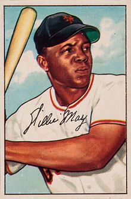
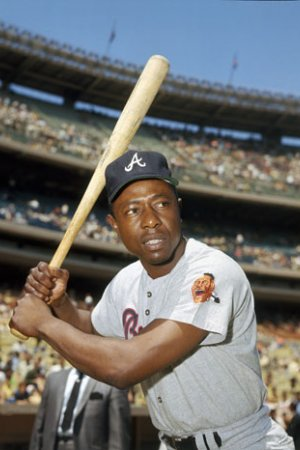
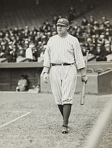

Αθλητές
Στο μπέιζμπολ αρκετοί είναι οι παίκτες οι οποίοι έχουν προσφέρει πολλά στο άθλημα. Οι τρεις παρακάτω αθλητές ωστόσο, έχουν καταφέρει να ξεχωρίσουν και θεωρούνται από πολλούς οι κορυφαίοι του αθλήματος.
1) Willie Mays (1951-1973) 2) Hank Aaron (1954-1976) 3) Babe Ruth (1914-1935)  
Πατήστε εδώ για να παρακολουθήσετε αποσπάσματα παικτών-θρύλων του παγκόσμιου πρωταθλήματος. Παρακάτω ακολουθεί ένας πίνακας με τα ονόματα τωρινών παικτών του μπέιζμπολ:
| ΟΝΟΜΑ | ΟΜΑΔΑ | ΘΕΣΗ |
|---|---|---|
| JORGE ALFARO | PHI | C |
| DARIO ALVAREZ | FA | P |
| JOHN BARBATO | DET | RP |
| JOEY BART | FA | C |
| VINCENTE CAMPOS | FA | P |
| RYAN CARPENTER | DET | SP |
| MATT DAVIDSON | CWS | 1B |
| JACOBY ELISBURY | NYY | CF |
| MICHAEL FELIZ | PIT | RP |
| ZAC GALLEN | FA | P |
Στον παρακάτω υπερσύνδεσμο βρίσκεται η ανανεωμένη λίστα που περιέχει όλους τους αθλητές του Μπέιζμπολ του 2018. Για περισσότερες πληροφοριές πατήστε εδώ .